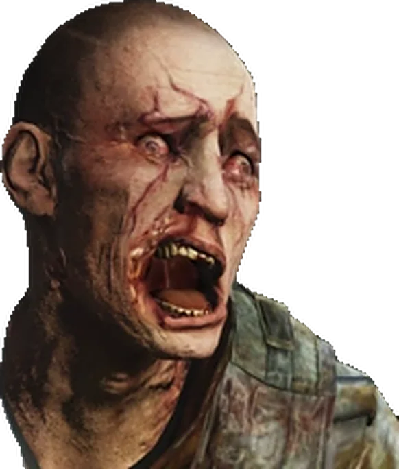
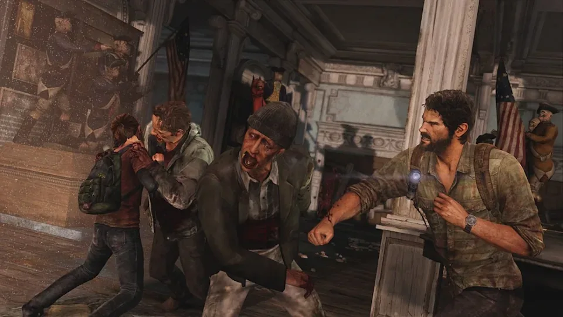
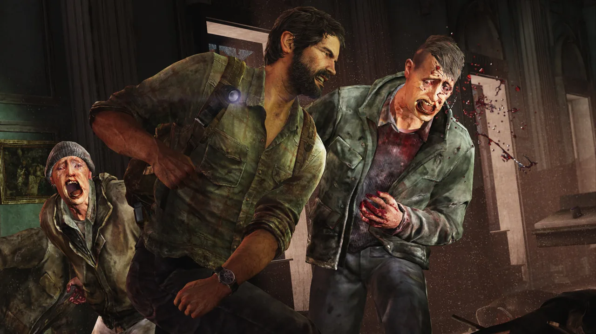
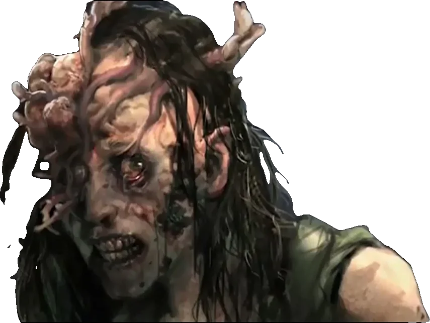
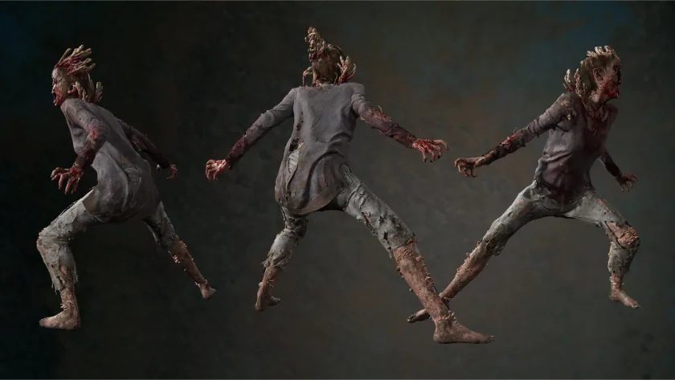
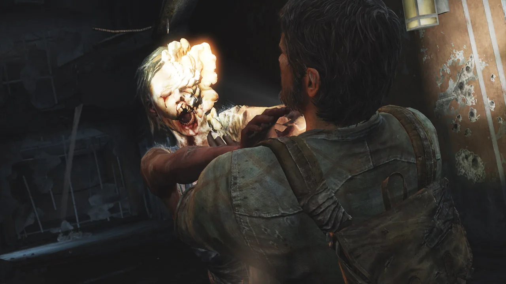
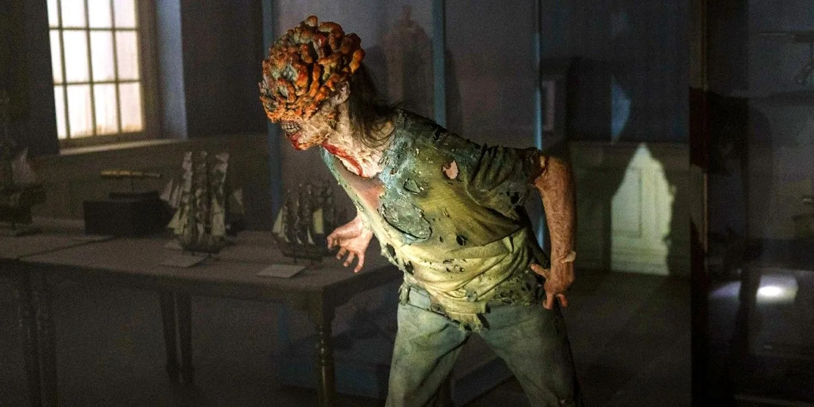
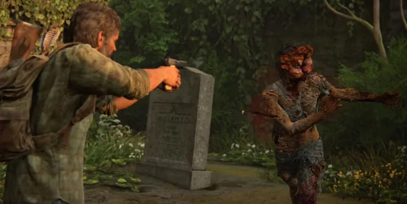
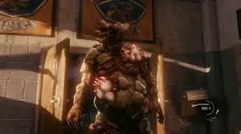
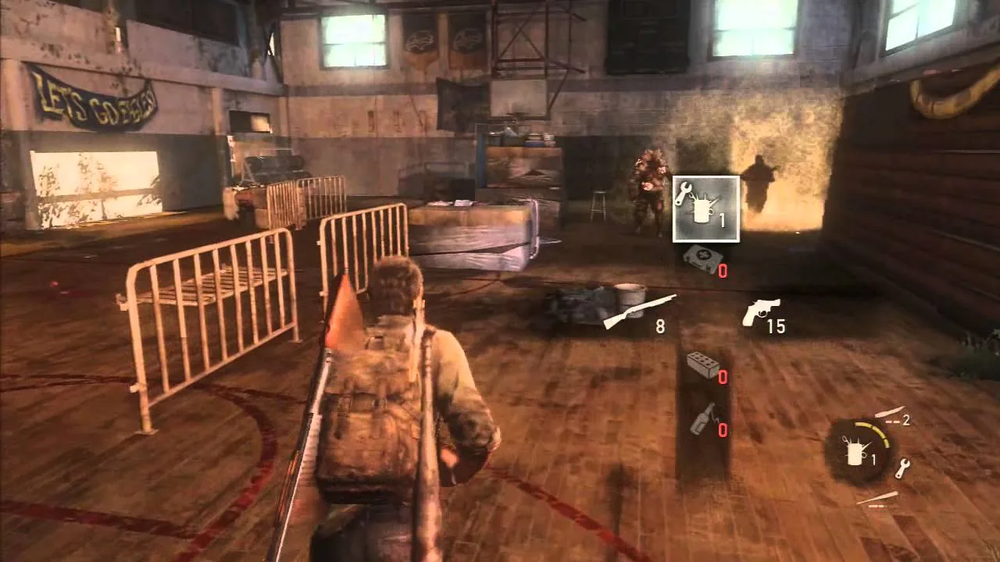

Les infectés
Les humains sont infectés par l'inhalation de spores de Cordyceps ou par contact direct avec les fluides d'un infecté, comme lors d'une morsure. Dans les deux jours suivant l'infection, le parasite attaque le cerveau de l'hôte et prend le contrôle de la victime. Celle-ci passe par quatre stades d'infection, devenant d'abord un coureur pour finir par atteindre la forme de colosse.


Coureurs infectés


Les coureurs en sont au premier stade d'infection. Leur vision est encore intacte et ils demeurent rapides et agiles. Vous les trouverez généralement en groupes. Une fois que l'un d'entre eux a repéré une cible, il fonce dans sa direction.
Les coureurs peuvent être éliminés furtivement, avec des attaques au corps à corps ou à l'arme à feu. Prenez garde à ne pas être débordé par plusieurs coureurs. Si cela se produit et que Joel bat en retraite, maintenez la touche L2 enfoncée et maintenez une direction pour vous échapper.

Rôdeurs infectés


Les rôdeurs représentent la deuxième phase du développement de l'infection. Ils sont rapides, agiles et se cachent en attendant que leur victime s'approche suffisamment près pour la piéger. Ayez un œil partout lorsque ces ennemis sont dans les environs.
Les rôdeurs sont vraiment prompts à sauter sur leur cible. S'ils vous attrapent, appuyez rapidement sur la touche carré pour vous dégager. En raison de leur rapidité, soyez toujours prêt à contrer une attaque. Vous n'aurez pas beaucoup de temps pour réagir s'ils attaquent. Il est possible de les surprendre et de les affaiblir alors qu'ils sont encore à couvert si vous placez des mines près de l'endroit où ils se cachent.
Claqueurs infectés


Au troisième stade de l'infection, les claqueurs perdent la vue en raison du champignon qui s'est développé sur leur visage. Leur ouïe est en revanche d'une efficacité redoutable. Les claqueurs utilisent un cliquetis et l'écholocalisation pour trouver leurs cibles. Pour cette raison, vous devez redoubler de discrétion en leur présence. Appuyez légèrement sur le joystick gauche lorsque vous êtes accroupi pour faire moins de bruit. Ne les laissez pas s'approcher trop près, ils vous tueraient facilement.
Vous pouvez facilement distraire les claqueurs à l'aide de briques ou de bouteilles que vous jetez pour éloigner les ennemis. Une bouteille ou une brique est également très utile contre un claqueur isolé. Frappez-le avec ces armes de fortune pour l'étourdir, ce qui vous permet de foncer sur lui pour l'attaquer avec une arme de corps à corps. Vous pouvez aussi les éliminer furtivement ou avec des armes à feu. Notez cependant qu'un surin est nécessaire dans le premier cas.
En achetant l'amélioration Maître du surin pour Joel, vous obtiendrez la capacité d'utiliser un surin pour attaquer un claqueur. Appuyez rapidement sur la touche triangle lorsqu'indiqué pour planter le surin dans le claqueur.
Colosses infectés


Les colosses ont atteint le dernier stade de l'infection, faisant d'eux les ennemis infectés les plus coriaces que vous rencontrerez. Le champignon recouvre tout leur corps, et ils s'en servent pour lancer des bombes de spores à distance sur leur cible. Ils sont néanmoins gros et lents, ce qui en fait des ennemis faciles à éviter. Vous devez disposer d'une puissance de feu conséquente pour les éliminer et leur résistance au corps à corps est impressionnante.
Jetez-leur un cocktail Molotov puis criblez-les de plomb avec votre fusil à pompe. Gardez cependant une certaine distance, les colosses peuvent rapidement vous mettre en pièces s'ils sont près de vous.
S'approcher est donc généralement une mauvaise idée, mais vous pouvez obtenir un Trophée si vous éliminez un colosse à courte portée. Réduisez sa santé au lance-flammes ou à l'aide d'un cocktail Molotov, puis approchez-vous pour l'achever rapidement avec un ou deux coups de fusil à pompe.